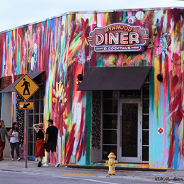
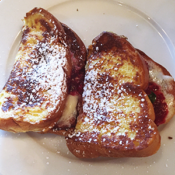
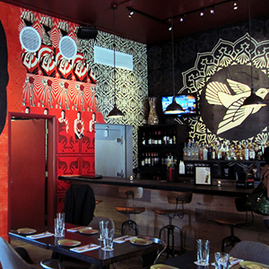
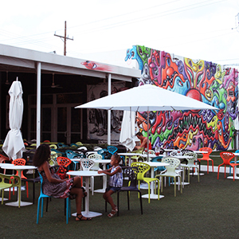
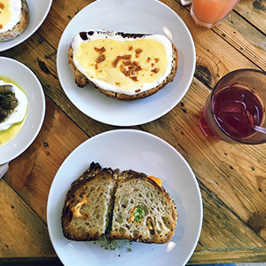
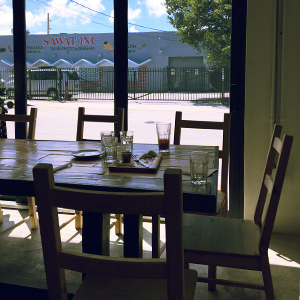

Have you ever wanted to get some breakfast late at night? Well, you can have it now in one of the best places called Wynwood Diner that is located right in the heart of Wynwood. Get some poached eggs with avocado and enjoy handcrafted drinks.
Wynwood
Where To Eat
- Wynwood Diner
- Wynwood Kitchen and Bar
- Zak the Baker
IIf you want to get amazing kosher food then Zak the Baker is exactly the place. Freshly baked bread and pastries are made every morning to satisfy your home meal cravings. They also serve the famous Panther coffee and make amazing lemonade. You should definitely try the tuna melt sandwich. It's delicious!

Wynwood Diner

Wynwood Diner

Wynwood Kitchen and Bar

Wynwood Kitchen and Bar

Zak the Baker

Zak the Baker